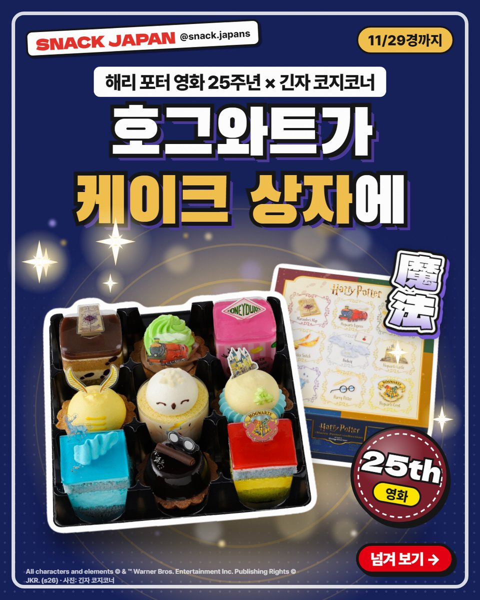
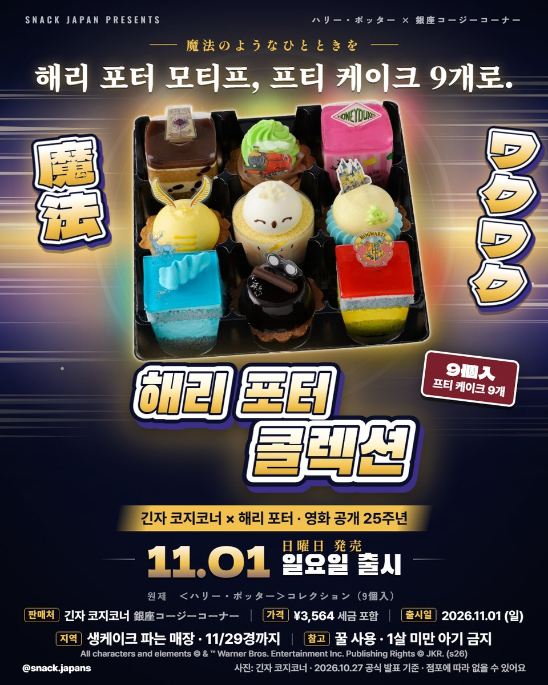
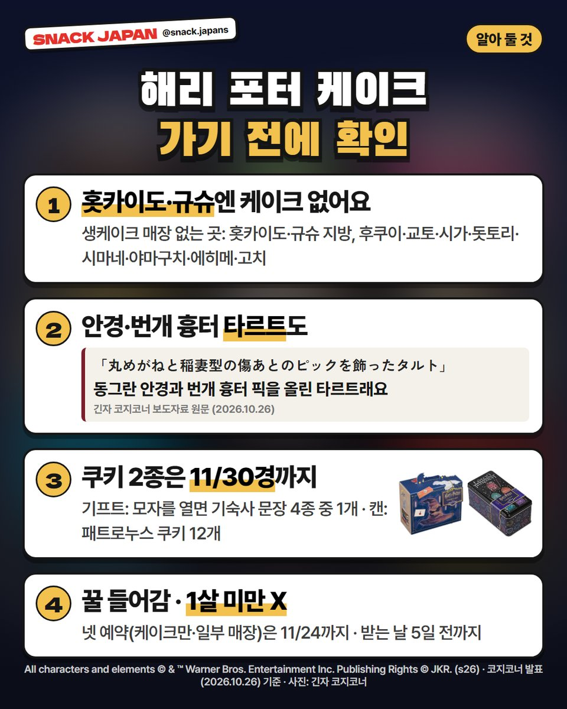
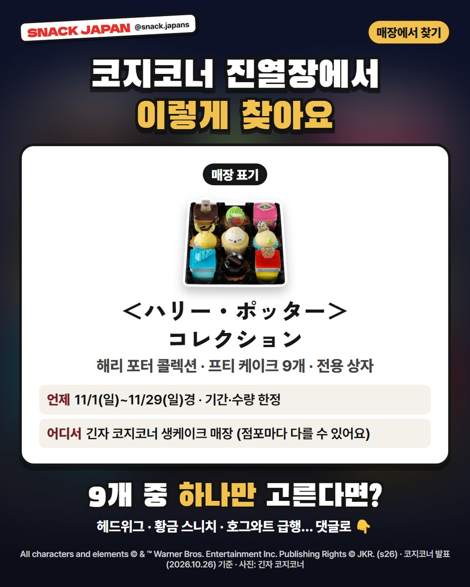

긴자 코지코너 해리 포터 케이크 출시, 호그와트가 케이크 상자에 (11월 한정)
해리 포터 영화 25주년! 11/1~11/29경 긴자 코지코너에 프티 케이크 9개 세트가 나왔어요. 케이크 없는 지역까지 정리했어요.
호그와트가 케이크 상자에 들어갔어요! ⚡
해리 포터 영화 공개 25주년을 맞아
일본 '긴자 코지코너'에 해리 포터 프티 케이크 9개 세트가 나왔어요.
작년에 이어 올해도 나온 콜라보래요.
긴자 코지코너 보도자료 기준으로 정리해 볼게요!

1. 언제·어디서?
- 파는 곳: 일본 긴자 코지코너 생케이크 매장
- 기간: 11/1(일) ~ 11/29(일)경, 기간·수량 한정
- 일본 이름: ＜ハリー・ポッター＞コレクション（9個入）
- 가격: 사진 카드에 정리해 뒀어요

2. 9개에 뭐가 들어 있어요?
코지코너 보도자료에 나온 9개예요.
- 패트로누스 · 해리 포터 · 호그와트 문장
- 황금 스니치 · 헤드위그 · 호그와트 성
- 忍びの地図(Marauder's Map) · 호그와트 급행 · 허니듀크스
해리 포터 케이크는 동그란 안경과 번개 흉터 픽을 올린 타르트,
헤드위그는 롤케이크래요 (코지코너 설명).
전용 상자에도 해리 포터 그림이 들어가 있어요.

3. 가기 전에 꼭 확인!
- 생케이크 매장이 없는 곳: 홋카이도·규슈 지방, 후쿠이·교토·시가·돗토리·시마네·야마구치·에히메·고치
- 넷 예약은 케이크만, 일부 매장에서 11/24(화) 23:59까지 (받는 날 5일 전까지)
- 꿀이 들어가서 1살 미만 아기는 먹으면 안 돼요
- 쿠키 기프트(6개)·쿠키 캔(12개)은 11/30경까지 — 기프트는 모자 부분을 열면 기숙사 문장 그림 4종 중 1개, 캔은 패트로누스 쿠키래요
- 쿠키 2종은 온라인 숍(롯데 숍)에서도 11/2 10시부터 팔아요 (없어지면 끝)

4. 매장에서 찾는 법
- 매장 표기: ＜ハリー・ポッター＞コレクション
- 쿠키 2종은 후쿠이·교토·돗토리엔 파는 곳이 없어요
- 점포마다 발매일이 다르거나 없을 수 있어요
총평
- 기준: 긴자 코지코너 보도자료(10/26)·공식 사이트, 10월 27일 확인
- 참고: 직접 먹어 보지 않아서 회사 설명만 옮겼어요
- 추천: 해리 포터 팬, 11월에 일본 여행 가는 분
9개 중 하나만 고른다면?
댓글로 알려 주세요 ⚡
사진: 긴자 코지코너 · All characters and elements © & ™ Warner Bros. Entertainment Inc. Publishing Rights © JKR. (s26)